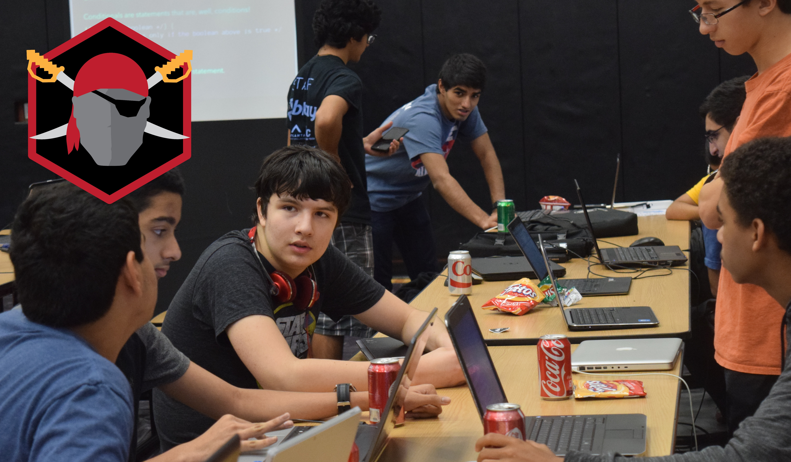
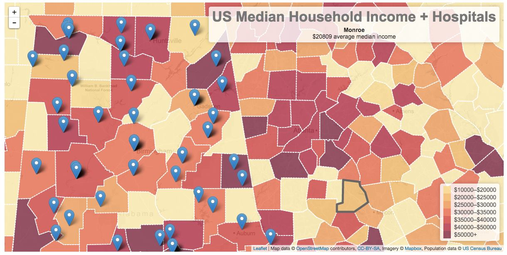
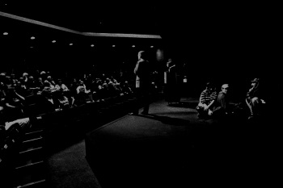
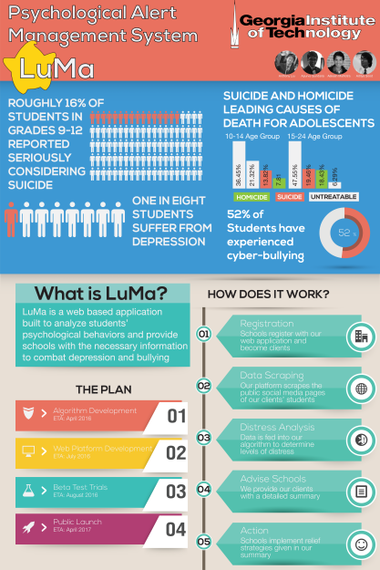
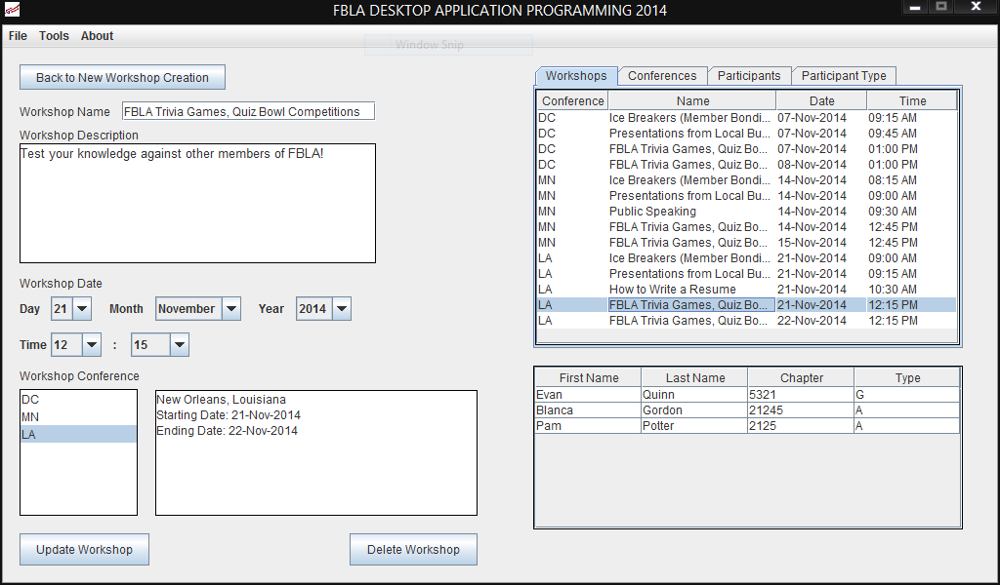

Anthony's Portfolio (Redesign under progress)
This is a portfolio of my ventures in entreprenership and technology by type and chronology. Some of these date back to when I was first learning to code, so be mindful! :)
Hackathon Organizer Ventures
- 
I was the executive director and lead organizer of Georgia's first school sponsored and student driven high school hackathon. I took charge of all logistics, fundraising, and technology. In total, I collected $2,000 in cash and $5,200 in kind. We hosted over one hundred metro Atlanta high school students for twelve hours and taught them skills from basic Java to more complex computer science principles through workshops and video streams.
Mentions
- http://www.hypepotamus.com/events/highschool-hackers-wanted-hackahs/
- http://www.neighbornewspapers.com/view/full_story/26898719/article-Alpharetta-High-plays-host-to-young-coders-on-Local-Hack-Day?instance=all
- http://revueandnews.com/stories/AHS-student-to-hold-hackathon,82051
- http://patch.com/georgia/alpharetta/student-brings-hackathon-alpharetta-high-school
- http://revueandnews.com/stories/100-turn-out-to-AHS-hackathon,82670
- http://www.hypepotamus.com/news/hackahs/
- https://vimeo.com/142764120

I was the executive director and lead organizer of Georgia's teen hackathon. I took charge of all logistics, fundraising, and technology. In total, I collected $1,900 in cash and $3,000 in kind. We hosted over forty metro Atlanta high school students for twenty-four hours and taught skills including basic Java and mobile app development. The projects from the event included a location based election synposis, an alarm clock that donates to charity upon snooze, a mobile app that managed the food in households, and a webapp that suggested restaraunts based on friend group mutual interests.
Mentions
Programming and Design Projects
- 
Built at HackHarvard, 'That's so Sick' is a data visualization web app that plots trends in sickness in the United States population against socioeconomic and healthcare trends to help nonprofits and healthcare boardmembers to determine potential expansion points that have the optimal social impact. The application scrapes its information from twitter and wolfram and presents it all as heatmaps and pins.
Built at HackGT, Fit Fighter is an iOS mobile application meant to gamify fitness by taking advantage of Apple's healthkit API. By extracting the data from healthkit, the game is able to convert a user's fitness into their character level within a game. For this, the game was a web based real time turn based RPG where instead of grinding monsters to grow stronger, the player excerizes to grow. As an incentive, the game promotes social media integration and competion between peers.
- 
Built at MHacks VI, Kantare is a video conferencing app that networks strangers together towards a collaborative/cooperative goal of self-growth. Unlike existing apps such as Omegle or Chat roullete, Kantare matches users on a matchmaking algorithm and provides them with predetermined topics to discuss (or act out). For certain topics, such as singing or rap battles, Kantare provides the option for the users to make their conference public, allowing for spectators to join in and watch as users duke it out.

Caputure the Flag is a game designed to introduce its players to the elementary aspects of Java as well as to help the players grasp how system networks are structured. The game is built using Java's swing library and compiles its game code as javacode. The game was entered into FBLA's Computer Game and Simulation competition and placed 2nd in the state.

Etude is a cloud-based mobile app that enables users to take notes or write reminders and share them with groups or 'teams'. Etude was built natively for Android and has a backend RESTful API written in PHP to handle uploading and downloading fromt he cloud. The app was submitted to FBLA's Mobile Application Development competition and placed 5th in state.
- 
A design project, LuMa is a fictitious business that I concieved while learning how to use Adobe Illustrator. The goal was to create a marketing poster and become more familiar with Illustrator, and the resulting poster was submitted to Georgia Tech's social entrepreneurship competiton along with a business proposal. In the end, the poster won best graphic design.
- 
Built when I was learning how to program in Java, this app was a Java app that allowed organizers to manage coming FBLA conferences, participants, and workshops. In addition, it allowed for participants to self register while restricting their access to more important pieces of information. The app was entered in FBLA's desktop application programming competition and won 5th place in nation and 2nd place in state.